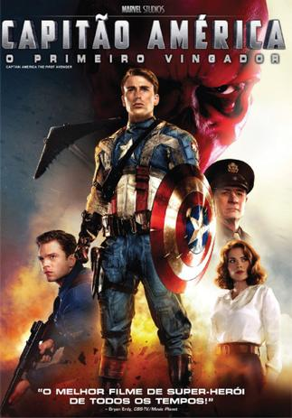
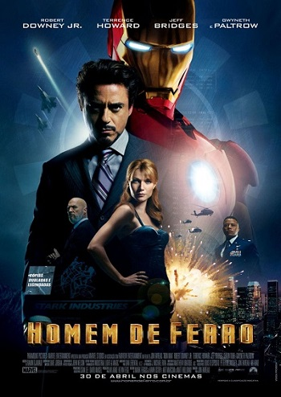

MCU
Aqui você encontra a ordem cronológia do universo cinematográfico da Marvel e mais!
Capitão América: O Primeiro América
Steve Rogers é um jovem que participa de experiências visando a criação do supersoldado americano. Quando os oficiais militares conseguem transformá-lo em uma arma humana, eles percebem que não podem arriscar a vida do jovem nas batalhas de guerra.
Capitã Marvel

Capitã Marvel, parte do exército de elite dos Kree, uma raça alienígena, encontra-se no meio de uma batalha entre seu povo e os Skrulls. Ao tentar impedir uma invasão de larga escala na Terra, em 1995, ela tem memórias recorrentes de uma outra vida, como Carol Danvers, agente da Força Aérea norte-americana. Com a ajuda de Nick Fury, Capitã Marvel precisa descobrir os segredos de seu passado e pôr um fim ao conflito intergalático com os Skrulls.
Homem de Ferro
Tony Stark é um industrial bilionário e inventor brilhante que realiza testes bélicos no exterior, mas é sequestrado por terroristas que o forçam a construir uma arma devastadora. Em vez disso, ele constrói uma armadura blindada e enfrenta seus sequestradores. Ao voltar para os EUA, Stark aprimora a armadura e a utiliza para combater o crime.
O Incrível Hulk

Vivendo escondido e longe de Betty Ross, a mulher que ama, o cientista Bruce Banner busca um meio de retirar a radiação gama que está em seu sangue. Ao mesmo tempo ele precisa fugir da perseguição do general Ross, seu grande inimigo, e da máquina militar que tenta capturá-lo, na intenção de explorar o poder que faz com que Banner se transforme no Hulk.